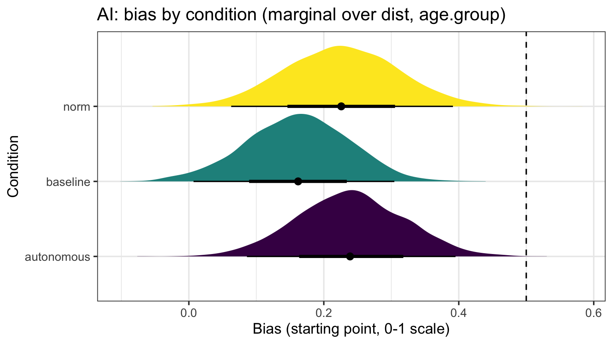

── Attaching core tidyverse packages ──────────────────────── tidyverse 2.0.0 ──
✔ dplyr 1.2.1 ✔ readr 2.2.0
✔ forcats 1.0.1 ✔ stringr 1.6.0
✔ ggplot2 4.0.3 ✔ tibble 3.3.1
✔ lubridate 1.9.5 ✔ tidyr 1.3.2
✔ purrr 1.2.2
── Conflicts ────────────────────────────────────────── tidyverse_conflicts() ──
✖ dplyr::filter() masks stats::filter()
✖ dplyr::lag() masks stats::lag()
ℹ Use the conflicted package (<http://conflicted.r-lib.org/>) to force all conflicts to become errors
library(brms)
Loading required package: Rcpp
Loading 'brms' package (version 2.23.0). Useful instructions
can be found by typing help('brms'). A more detailed introduction
to the package is available through vignette('brms_overview').
Attaching package: 'brms'
The following object is masked from 'package:stats':
ar
library(cmdstanr)
This is cmdstanr version 0.9.0
- CmdStanR documentation and vignettes: mc-stan.org/cmdstanr
- CmdStan path: /Users/jasongeller/.cmdstan/cmdstan-2.37.0
- CmdStan version: 2.37.0
A newer version of CmdStan is available. See ?install_cmdstan() to install it.
To disable this check set option or environment variable cmdstanr_no_ver_check=TRUE.
library(emmeans)
Welcome to emmeans.
Caution: You lose important information if you filter this package's results.
See '? untidy'
Attaching package: 'tidybayes'
The following object is masked from 'package:parameters':
parameters
The following object is masked from 'package:bayestestR':
hdi
The following objects are masked from 'package:brms':
dstudent_t, pstudent_t, qstudent_t, rstudent_t
library(patchwork)library(knitr)library(here)
here() starts at /Users/jasongeller/Downloads/DDM-for-kids
Shared preprocessing lives in data_prep.R so the AI and DI documents can’t drift out of sync on exclusion criteria. This produces explicit_ai (and explicit_di, unused here). Paths use here::here(), resolved from the project root (found via DDM-for-kids.Rproj), so this works regardless of which directory actually renders the document.
source(here("data_prep.R"))
Rows: 3700 Columns: 17
── Column specification ────────────────────────────────────────────────────────
Delimiter: ","
chr (14): sn, original.sn, success, condition, distribution, location, actor...
dbl (3): actor.age.calc, recip.age.calc, dec
ℹ Use `spec()` to retrieve the full column specification for this data.
ℹ Specify the column types or set `show_col_types = FALSE` to quiet this message.
Warning: There was 1 warning in `mutate()`.
ℹ In argument: `duration = as.numeric(duration)`.
Caused by warning:
! NAs introduced by coercion
head(explicit_ai)
# A tibble: 6 × 9
sn condition duration trialnum dist distribution dec age.group
<fct> <fct> <dbl> <chr> <chr> <chr> <dbl> <fct>
1 sn4 autonomous 0.734 1 eq ai 1 6&7
2 sn4 autonomous 0.868 2 uneq ai 1 6&7
3 sn4 autonomous 1.03 4 eq ai 1 6&7
4 sn4 autonomous 0.501 5 uneq ai 1 6&7
5 sn4 autonomous 0.801 6 uneq ai 1 6&7
6 sn4 autonomous 0.767 7 uneq ai 1 6&7
# ℹ 1 more variable: dec_recode <dbl>
Model Specification
We modeled response time and choice jointly with a hierarchical Bayesian drift diffusion model (the Wiener process; Ratcliff, 1978), estimated via brms (Bürkner, 2017), which compiles the model to Stan (Carpenter et al., 2017) and samples it here with cmdstanr. The DDM decomposes each trial’s observed response time and binary choice (accept vs. reject) into four latent parameters: drift rate (mu, rate and direction of evidence accumulation — negative toward accept, positive toward reject, given how dec_recode was coded), non-decision time (ndt, encoding and motor-execution time not attributable to the decision process itself), starting point (bias, the initial position between the two response boundaries, expressed as a proportion of boundary separation), and boundary separation (bs, response caution — how much evidence is required before committing to a response).
Fixed and random effects
mu, ndt, and bias were each modeled with the full condition * dist * age.group factorial structure (all main effects, all three 2-way interactions, and the 3-way interaction). condition uses 0 + (cell-means) coding; bs was estimated as a single, freely-varying parameter with no predictors, and bias was fixed at 0.5 (unbiased) in earlier model iterations before being given this same full factorial structure. By-subject random intercepts and slopes for dist were included on mu only ((1 + dist | p | sn), correlated across the two random effects via the shared group id p); random effects on ndt and bias were explored during model development and abandoned after producing severe divergences — with this few trials per subject per condition/allocation cell, individual differences in non-decision time and starting point are not well identified separately from individual differences in drift rate.
bs has no prior line above — it is not given a predictor formula (see Fixed and random effects), so it falls under class = Intercept, dpar = bs in brms’s internal matching and rides on brms’s default prior rather than one we specified. Worth deciding deliberately whether that’s acceptable for publication or whether bs should get an explicit prior too.
Custom starting values, since default inits tend to land somewhere the wiener likelihood can’t evaluate.
The model was fit with 4 MCMC chains of 10000 iterations each (500 warmup), thinned by 10, yielding 3800 post-warmup draws. The target average Metropolis acceptance probability (adapt_delta) was set to 0.95 and maximum treedepth to 15, both raised above brms’s defaults to accommodate the added sampling difficulty from bias’s full factorial structure.
file points at the model already fit outside this document (same formula, same 1244-row explicit_ai), cached in analysis/models/ — brm()’s default file_refit = "never" means it just loads that .rds and skips fitting entirely on render, rather than re-running MCMC every time. Resolved via here() rather than a relative path for the same reason as the data path above.
Contrasts are judged credible based on the 95% credible interval excluding zero together with the probability of direction (pd > 97.5%). Region-of-practical-equivalence (ROPE) percentages are also computed and available in the extracted results objects (each distributional parameter gets its own scaled range, since the automatic default has no supported method for a multi-parameter Wiener/DDM family — see the rope-ranges chunk under Extract Results), but ROPE is reported only for supplementary context here, not as the basis for calling an effect credible.
Convergence check
Rhat/ESS, plus a check for non-finite log-likelihood entries — a distinct failure mode from divergences (a single NaN in the log-lik matrix poisons elpd_loo/loo() sums even when Rhat and pareto-k both look clean; the usual DDM-specific cause is a posterior draw where ndt ends up larger than a trial’s actual RT).
Everything the write-up below quotes comes from these objects — re-run this chunk after refitting and the prose updates itself.
ROPE ranges
estimate_contrasts()’s automatic ROPE default couldn’t be derived for this model (a Wiener/DDM family with four distributional parameters isn’t something bayestestR::rope_range()’s heuristic knows how to compute a scale for), so instead of accepting its flat [-0.1, 0.1] fallback — which would apply the same raw number to mu (drift-rate units), ndt (seconds), and bias (probability) despite their very different natural scales — each parameter gets its own ROPE range: 10% of that parameter’s own fitted posterior SD (posterior_epred(fit_ai, dpar = ...)), the same logic the automatic default uses for ordinary models, just computed by hand per dpar here.
estimate_contrasts() doesn’t guarantee which level lands in Level1 vs Level2 — confirmed (see ddm-di.qmd) that this flips between datasets for reasons unrelated to the actual estimate. Normalize to eq - uneq explicitly rather than relying on it happening to come out that way.
# Force every contrasts_* object below to report eq - uneq, regardless of# which order estimate_contrasts() happened to assign Level1/Level2.normalize_eq_minus_uneq <-function(df) { flip <- df$Level1 =="uneq"if (any(flip)) { new_low <--df$CI_high[flip] new_high <--df$CI_low[flip] df$Difference[flip] <--df$Difference[flip] df$CI_low[flip] <- new_low df$CI_high[flip] <- new_high tmp <- df$Level1[flip] df$Level1[flip] <- df$Level2[flip] df$Level2[flip] <- tmp# pd and ROPE_Percentage are both symmetric around 0 and unaffected by the flip } df}
# dist (equal vs unequal) simple effects, by condition x age.group, on drift ratecontrasts_mu <-estimate_contrasts( fit_ai, contrast ="dist", by =c("condition", "age.group"),predict ="mu", backend ="emmeans", rope_range =c(-rope_mu, rope_mu)) |>normalize_eq_minus_uneq()# same, on non-decision timecontrasts_ndt <-estimate_contrasts( fit_ai, contrast ="dist", by =c("condition", "age.group"),predict ="ndt", backend ="emmeans", rope_range =c(-rope_ndt, rope_ndt)) |>normalize_eq_minus_uneq()# same, on starting point (bias) -- meaningful now that bias has the full# condition*dist*age.group structure rather than being fixed at 0.5contrasts_bias <-estimate_contrasts( fit_ai, contrast ="dist", by =c("condition", "age.group"),predict ="bias", backend ="emmeans", rope_range =c(-rope_bias, rope_bias)) |>normalize_eq_minus_uneq()# marginal bias (starting point) by condition, on the natural (0,1) scale --# a simpler summary alongside the dist-contrast version abovebias_by_condition <-estimate_means( fit_ai, by ="condition", predict ="bias", backend ="emmeans")contrasts_mu
Estimated Marginal Means
condition | Bias | 95% CI | pd
---------------------------------------
autonomous | 0.56 | [0.52, 0.60] | 100%
baseline | 0.54 | [0.50, 0.58] | 100%
norm | 0.56 | [0.52, 0.60] | 100%
Variable predicted: duration, dec_recode
Predictors modulated: condition
Predictions are on the bias-scale.
Check these column names before trusting the formatting helpers below — estimate_contrasts()/estimate_means() output can shift slightly across modelbased versions, and the helpers assume the standard Difference/Mean, CI_low, CI_high, pd names.
# Pull one row out of a contrasts/means table by column = value filters, e.g.# fmt_contrast(contrasts_mu, condition = "norm", age.group = "4&5")filter_row <-function(df, ...) { filters <-list(...) row <- dffor (col innames(filters)) row <- row[row[[col]] == filters[[col]], ]if (nrow(row) !=1) stop("filter matched ", nrow(row), " rows, expected 1") row}fmt_contrast <-function(df, ...) { row <-filter_row(df, ...)sprintf("%s, 95%% CI [%s, %s], *pd* = %s%%", insight::format_value(row$Difference), insight::format_value(row$CI_low), insight::format_value(row$CI_high), insight::format_value(row$pd *100, digits =1) )}fmt_mean <-function(df, ...) { row <-filter_row(df, ...)# estimate_means() names the value column after the dpar (e.g. "Bias"), not "Mean" value_col <-setdiff(names(df), c(names(list(...)), "CI_low", "CI_high", "pd", "ROPE_Percentage"))sprintf("%s, 95%% CI [%s, %s]", insight::format_value(row[[value_col]]), insight::format_value(row$CI_low), insight::format_value(row$CI_high))}# Primary credibility criterion: the 95% credible interval excludes zero AND# pd clears the conventional 97.5% bar. These two will usually agree (a CI# excluding zero and pd > 97.5% are closely related for well-behaved# posteriors), so requiring both is a small extra safeguard, not two# independent hurdles. This is the primary criterion used throughout —# ROPE/practical-significance is reported for context (see rope-ranges chunk)# but is not the basis for calling something "credible" here.credible_label <-function(df, ..., pd_threshold =0.975) { row <-filter_row(df, ...) ci_excludes_zero <- (row$CI_low >0) || (row$CI_high <0)if (ci_excludes_zero && row$pd > pd_threshold) "credible"else"not credible"}# Three-way ROPE classification (Kruschke, 2018; Makowski et al., 2019) --# kept available for anyone who wants the practical-significance detail, but# not used as the primary credibility criterion in the prose below (that's# credible_label() above, based on the 95% CrI and pd).practical_label <-function(df, ..., lower =0.05, upper =0.95) { row <-filter_row(df, ...)if (row$ROPE_Percentage <= lower) {"practically meaningful" } elseif (row$ROPE_Percentage > upper) {"negligible" } else {"ambiguous" }}fmt_rope <-function(df, ...) { row <-filter_row(df, ...)paste0(insight::format_value(row$ROPE_Percentage *100, digits =1), "%")}
Results
Drift Rate
For 4–5-year-olds, the equal–unequal difference in drift rate was not credible in the autonomous condition (0.12, 95% CI [-0.24, 0.46], pd = 72.6%) and not credible in the baseline condition (0.03, 95% CI [-0.31, 0.37], pd = 57.1%), but credible in the norm condition (-0.42, 95% CI [-0.82, -0.02], pd = 98.2%).
By 6–7 years, autonomous (-0.13, 95% CI [-0.50, 0.24], pd = 74.9%) and baseline (-0.40, 95% CI [-0.81, 0.01], pd = 96.9%) remained not credible, while the norm effect grew (-1.57, 95% CI [-1.99, -1.17], pd = 100.0%).
By 8–9 years, the difference was credible across all three conditions: autonomous (-1.01, 95% CI [-1.40, -0.63], pd = 100.0%), baseline (-0.74, 95% CI [-1.17, -0.32], pd = 100.0%), and norm (-2.65, 95% CI [-3.11, -2.19], pd = 100.0%).
Plotted together with ndt and bias at the end of the Results section (one combined figure, p_mu/p_ndt/p_bias stacked via patchwork) rather than as three separate figures.
draws_mu <-pairs(emmeans(fit_ai, ~ dist | condition * age.group, dpar ="mu")) |>gather_emmeans_draws()p_mu <-ggplot(draws_mu, aes(x = .value, y = condition, fill = condition)) +stat_halfeye() +facet_wrap(~age.group) +geom_vline(xintercept =0, linetype ="dashed") +scale_fill_viridis_d(guide ="none") +labs(x ="Difference in drift rate (eq - uneq)", y ="Condition", title ="Drift rate (mu)") +theme_bw(base_size =14)
Non-Decision Time
For 4–5-year-olds: autonomous (-3.67e-03, 95% CI [-0.02, -1.46e-04], pd = 100.0%), baseline (-0.03, 95% CI [-0.08, -3.25e-03], pd = 100.0%), norm (-0.03, 95% CI [-0.09, -4.59e-03], pd = 100.0%).
For 6–7-year-olds: autonomous (-8.44e-03, 95% CI [-0.03, -1.34e-03], pd = 100.0%), baseline (-0.05, 95% CI [-0.11, -0.01], pd = 100.0%), norm (-0.08, 95% CI [-0.14, -0.03], pd = 100.0%).
For 8–9-year-olds: autonomous (-0.03, 95% CI [-0.08, -3.52e-03], pd = 100.0%), baseline (-0.16, 95% CI [-0.22, -0.09], pd = 100.0%), norm (-0.15, 95% CI [-0.23, -0.07], pd = 100.0%).
draws_ndt <-pairs(emmeans(fit_ai, ~ dist | condition * age.group, dpar ="ndt")) |>gather_emmeans_draws()p_ndt <-ggplot(draws_ndt, aes(x = .value, y = condition, fill = condition)) +stat_halfeye() +facet_wrap(~age.group) +geom_vline(xintercept =0, linetype ="dashed") +scale_fill_viridis_d(guide ="none") +labs(x ="Difference in ndt, seconds (eq - uneq)", y ="Condition", title ="Non-decision time (ndt)") +theme_bw(base_size =14)
Starting Point (Bias)
Bias got the same full condition * dist * age.group structure as mu/ndt, so it supports the same eq - uneq contrast — recall dec_recode = 1 is the reject boundary, so a positive eq - uneq difference means the starting point for equal trials sits closer to reject relative to unequal trials (and vice versa for negative). One caveat worth keeping in mind reading these: unlike mu/ndt, which reflect the trial actually being processed, bias is supposed to represent a pre-trial predisposition — children don’t know whether a given trial is equal or unequal until it starts, so a credible dist effect on bias is more likely picking up some residual asymmetry the model is using bias’s flexibility to absorb, rather than a literal “predisposition toward this specific upcoming trial type.”
For 4–5-year-olds, the equal–unequal difference in bias was not credible in the autonomous condition (-0.01, 95% CI [-0.12, 0.09], pd = 59.8%), not credible in baseline (-0.02, 95% CI [-0.13, 0.08], pd = 66.6%), and not credible in norm (0.04, 95% CI [-0.08, 0.16], pd = 71.1%).
By 6–7 years: autonomous (0.06, 95% CI [-0.05, 0.16], pd = 85.3%), baseline (0.17, 95% CI [0.04, 0.29], pd = 99.5%), norm (0.09, 95% CI [-0.03, 0.22], pd = 92.7%).
By 8–9 years: autonomous (0.11, 95% CI [-0.01, 0.22], pd = 96.3%), baseline (0.08, 95% CI [-0.04, 0.19], pd = 89.6%), norm (0.23, 95% CI [0.10, 0.36], pd = 100.0%).
contrasts_bias (via modelbased) is on the response (0-1 probability) scale by default — confirmed by comparing it directly against emmeans(...) |> regrid("response") |> pairs(), which matches it exactly (both give -0.0129 for autonomous@4&5, for example), while the plain link-scale pairs() (no regrid()) gives a different, larger number (-0.052 for the same cell). So the plot below uses regrid("response") before pairs() to match the scale the prose is already quoting, rather than the logit scale.
draws_bias <-emmeans(fit_ai, ~ dist | condition * age.group, dpar ="bias") |>regrid("response") |>pairs() |>gather_emmeans_draws()p_bias <-ggplot(draws_bias, aes(x = .value, y = condition, fill = condition)) +stat_halfeye() +facet_wrap(~age.group) +geom_vline(xintercept =0, linetype ="dashed") +scale_fill_viridis_d(guide ="none") +labs(x ="Difference in bias, probability scale (eq - uneq)", y ="Condition", title ="Starting point (bias)") +theme_bw(base_size =14)
Combined figure
All three eq - uneq contrasts, stacked (each keeps its own x-axis scale — drift rate, seconds, and probability aren’t comparable units, so this isn’t a shared-axis figure, just a shared layout).
p_mu / p_ndt / p_bias
Figure 1
For context, the marginal bias per condition (averaged over dist/age.group), on the natural (0, 1) scale: autonomous 0.56, 95% CI [0.52, 0.60], baseline 0.54, 95% CI [0.50, 0.58], norm 0.56, 95% CI [0.52, 0.60].
draws_bias_marginal <-emmeans(fit_ai, ~condition, dpar ="bias", type ="response") |>gather_emmeans_draws()
NOTE: Results may be misleading due to involvement in interactions
ggplot(draws_bias_marginal, aes(x = .value, y = condition, fill = condition)) +stat_halfeye() +geom_vline(xintercept =0.5, linetype ="dashed") +scale_fill_viridis_d(guide ="none") +labs(x ="Bias (starting point, 0-1 scale)", y ="Condition", title ="AI: bias by condition (marginal over dist, age.group)") +theme_bw(base_size =14)

Figure 2
Summary
# how many of the 9 condition x age.group cells clear the credibility bar# (95% CrI excludes zero AND pd > 97.5% -- same joint criterion as# credible_label() above, not a ROPE-based count)count_credible <-function(df, pd_threshold =0.975) {sum((df$CI_low >0| df$CI_high <0) & df$pd > pd_threshold)}
Putting mu, ndt, and bias together, the three parameters tell three different stories about how the fairness manipulation actually works. Credibility throughout is based on the 95% credible interval excluding zero together with pd > 97.5%.
Drift rate carries the headline effect. The norm condition shows a credible equal-vs-unequal distinction at every age tested, including the youngest (4–5y: -0.42, 95% CI [-0.82, -0.02], pd = 98.2%), years before autonomous or baseline catch up (both not credible through 6–7y, only becoming credible at 8–9y: autonomous -1.01, 95% CI [-1.40, -0.63], pd = 100.0%, baseline -0.74, 95% CI [-1.17, -0.32], pd = 100.0%). This is the mechanism doing the actual work — the fairness prompt changes how strongly children weigh unequal allocations while they’re deciding, not just their final choice.
NDT is credible almost everywhere, but the magnitude tells the real story. Unlike mu, where whole conditions are non-credible until 8–9y, ndt’s equal-vs-unequal difference clears the 95%-CrI-and-pd bar in 9 of 9 cells — even autonomous’s smallest effect, at 4–5y, is credible (-3.67e-03, 95% CI [-0.02, -1.46e-04], pd = 100.0%). What differentiates the conditions here is size, not credibility: autonomous’s effect stays small across every age tested (-0.03, 95% CI [-0.08, -3.52e-03], pd = 100.0% even by 8–9y), while baseline and norm grow substantially larger by 6–7y (baseline -0.05, 95% CI [-0.11, -0.01], pd = 100.0%, norm -0.08, 95% CI [-0.14, -0.03], pd = 100.0%) and continue growing through 8–9y. So NDT differences are statistically real in every condition, but functionally, baseline and norm are where the sizeable NDT differences live.
Bias is not where the fairness effect lives. Marginal starting point is nearly identical across conditions (autonomous 0.56, 95% CI [0.52, 0.60], baseline 0.54, 95% CI [0.50, 0.58], norm 0.56, 95% CI [0.52, 0.60]) — all sit at a small, universal lean toward the reject boundary, with no credible difference between conditions. The dist contrast on bias only clears the credibility bar in 2 of 9 condition x age.group cells, with no coherent age or condition trend across them — consistent with that being residual model flexibility rather than a real pre-trial predisposition (children can’t know in advance whether a trial will be equal or unequal).
Net conclusion: giving bias room to vary didn’t explain away the drift-rate story — if anything, the drift-rate effects came out larger once bias was allowed to flex (compare this document’s -2.65, 95% CI [-3.11, -2.19], pd = 100.0% at 8–9y norm against the fixed-bias model’s smaller estimate). The fairness prompt’s effect on advantageous inequity aversion is a drift-rate phenomenon — it accelerates when and how strongly children’s evidence-accumulation process distinguishes fair from unfair offers, not where that process starts or how long perceptual/motor encoding takes.